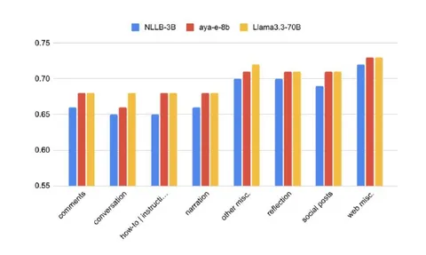
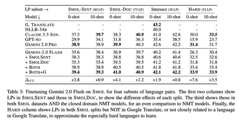
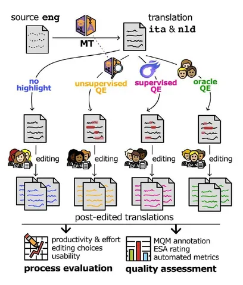
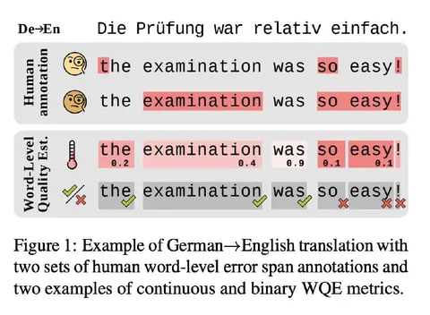
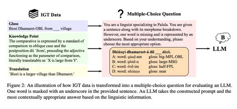
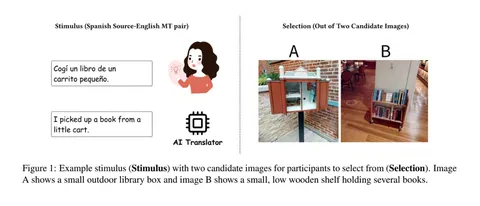

Мы уже кратко писали о статьях исследователей Яндекса, которые в 2025 году представили на конференции Empirical Methods in Natural Language Processing. Сегодня на Хабре вышел пост, в котором руководитель команды аналитики перевода в Яндексе Катя Еникеева рассказала об этих работах более детально, а ещё поделилась новыми подходами в оценке качества перевода.
Зовём читать полную статью и делимся интересными трендами, замеченными Катей на конференции.
1. Новые мультиязычные бенчмарки: BOUQuET
Одним из заметных стендов был BOUQuET — новый мультиязычный бенчмарк от FAIR. Вместо готовых англоязычных текстов авторы попросили носителей восьми языков придумать собственные примеры из разных жизненных ситуаций, покрывающие определённые лингвистические явления. На каждый язык пришлось по 250 примеров, а всего их в наборе — 2 тысячи. Датасет сделали открытым и развивающимся: вместе с гайдлайнами он выложен на платформу, где можно постепенно добавлять переводы на новые языки.
2. Датасеты для малоресурсных языков: SMOL
Ещё один крупный мультиязычный датасет — SMOL от Google Research/DeepMind и нескольких университетов. В отличие от BOUQuET, это обучающий корпус для малоресурсных языков. Авторы показали, что дообучение Gemini 2.0 Flash на этом корпусе даёт особенно большие приросты именно на малоресурсных направлениях.
3. Word-level Quality Estimation и помощь переводчикам
Несколько работ были посвящены оценке качества перевода на уровне слов и тому, как такие методы влияют на постредактирование. Например, QE4PE исследует способы подсветить потенциальные фрагменты для исправлений и влияние «подсветки» на скорость и качество работы переводчиков. В целом качество растёт благодаря редактуре, а сами способы подсветки существенной разницы не дают.
4. Unsupervised QE и uncertainty-метрики
Работа Unsupervised Word-level Quality Estimation Through the Lens of Annotators’ (Dis)agreement рассматривает оценку качества перевода на уровне токенов без обучения на человеческой разметке. Авторы попробовали использовать разные варианты uncertainty: surprisal, entropy и KL-дивергенции на промежуточных слоях. Выяснилось, что unsupervised-методы работают лишь немного хуже supervised-подходов, а перекрывающаяся человеческая разметка даёт более стабильное ранжирование автоматических метрик по качеству.
5. Проверка лингвистического рассуждения LLM
Отдельный сюжет — попытка оценить, насколько LLM способны к настоящему лингвистическому рассуждению. В работе LingGym авторы предлагают бенчмарк для проверки, умеют ли модели восстанавливать пропущенную информацию в описании малоресурсных языков. Результаты оказались довольно суровыми: chain-of-thought почти не даёт прироста, и для таких задач нужны более специализированные механизмы.
6. MT literacy и доверчивость пользователей
Работа Toward Machine Translation Literacy исследует, как пользователи с разным уровнем владения языком воспринимают ошибки перевода. Люди, не знающие исходного языка, часто пропускают даже очевидные сбои и оказываются слишком доверчивы к машинному переводу. Авторы делают вывод, что таким пользователям нужны дополнительные интерфейсные подсказки и развитие MT literacy.
ML Underhood
